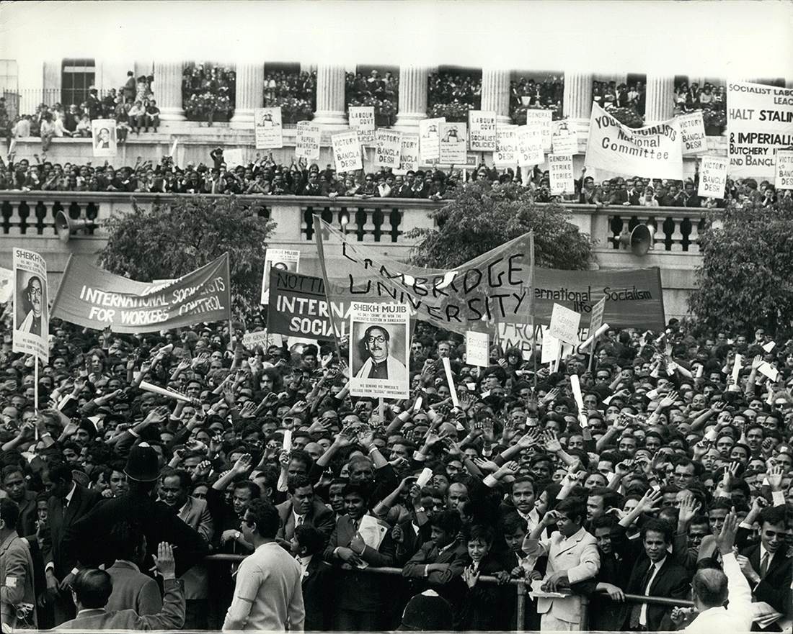
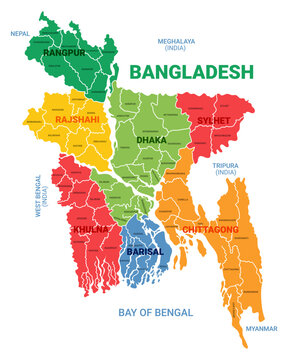
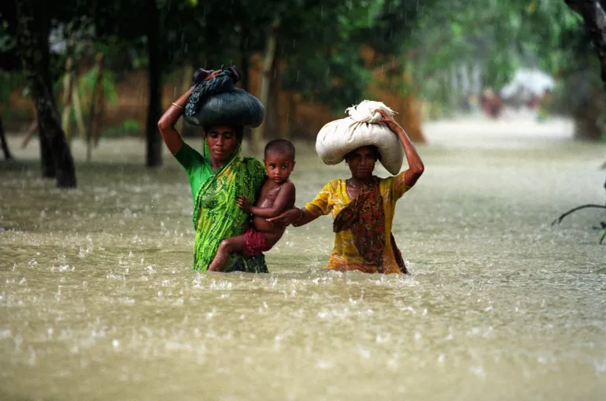
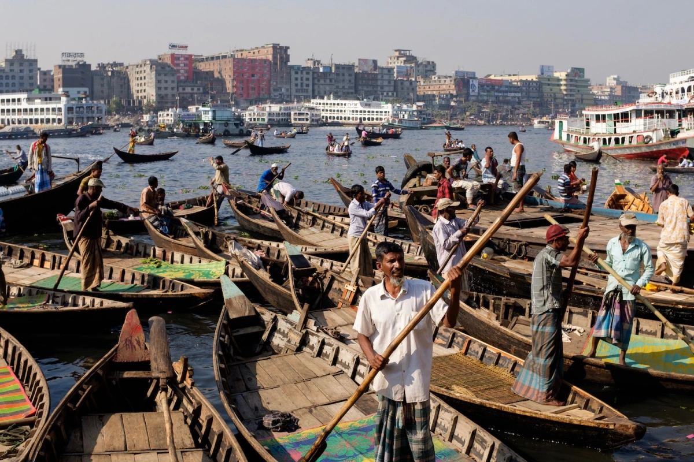
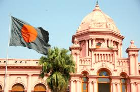

Bangladesh,[a] officially the People's Republic of Bangladesh,[b] is a country in South Asia. It is the eighth-most populous country in the world and among the most densely populated with a population of 170 million in an area of 148,460 square kilometres (57,320 sq mi). Bangladesh shares land borders with India to the north, west, and east, and Myanmar to the southeast. To the south, it has a coastline along the Bay of Bengal. It is separated from Bhutan and Nepal by the Siliguri Corridor, and from China by the mountainous Indian state of Sikkim. Dhaka, the capital and largest city, is the nation's political, financial, and cultural centre. Chittagong is the second-largest city and the busiest port. The official language is Bengali, with Bangladeshi English also used in government.
Bangladesh is part of the historic and ethnolinguistic region of Bengal, which was divided during the Partition of British India in 1947 as the eastern enclave of the Dominion of Pakistan, from which it gained independence in 1971 after a bloody war.[17] The country has a Bengali Muslim majority. Ancient Bengal was known as Gangaridai and was a stronghold of pre-Islamic kingdoms. The Muslim conquest after 1204 led to the sultanate and Mughal periods, during which an independent Bengal Sultanate and wealthy Mughal Bengal transformed the region into an important centre of regional affairs, trade, and diplomacy. The Battle of Plassey in 1757 marked the beginning of British rule. The creation of Eastern Bengal and Assam in 1905 set a precedent for the emergence of Bangladesh. The All-India Muslim League was founded in Dhaka in 1906.[18] The Lahore Resolution in 1940 was supported by A. K. Fazlul Huq, the first Prime Minister of Bengal. The present-day territorial boundary was established with the announcement of the Radcliffe Line.
In 1947, East Bengal became the most populous province in the Dominion of Pakistan and was renamed East Pakistan, with Dhaka as the legislative capital. The Bengali Language Movement in 1952, the 1958 Pakistani coup d'état, and the 1970 Pakistani general election spurred Bengali nationalism and pro-democracy movements. The refusal of the Pakistani military junta to transfer power to the Awami League, led by Sheikh Mujibur Rahman, triggered the Bangladesh Liberation War in 1971. The Mukti Bahini, aided by India, waged a successful armed revolution; the conflict saw the Bangladeshi genocide. The new state of Bangladesh became a constitutionally secular state in 1972, although Islam was declared the state religion in 1988.[19] In 2010, the Bangladesh Supreme Court reaffirmed secular principles in the constitution.[20] The Constitution of Bangladesh officially declares it a socialist state.[21]
A middle power in the Indo-Pacific,[22] Bangladesh is home to the fifth-most spoken native language, the third-largest Muslim-majority population, and the second-largest economy in South Asia. It maintains the third-largest military in the region and is the largest contributor to UN peacekeeping operations.[23] Bangladesh is a unitary parliamentary republic based on the Westminster system. Bengalis make up almost 99% of the population.[24] The country consists of eight divisions, 64 districts, and 495 subdistricts, and includes the world's largest mangrove forest. Bangladesh hosts one of the largest refugee populations due to the Rohingya genocide.[25] Bangladesh faces challenges like corruption, political instability, overpopulation, and effects of climate change. Bangladesh has twice chaired the Climate Vulnerable Forum and hosts the Bay of Bengal Initiative for Multi-Sectoral Technical and Economic Cooperation (BIMSTEC) headquarters. It is a founding member of the South Asian Association for Regional Cooperation (SAARC) and a member of the Organization of Islamic Cooperation and the Commonwealth of Nations.
Religion
- Islam: 91.04%
- Hinduism: 7.95%
- Buddhism: 0.61%
- Christianity: 0.30%
- Other: 0.12%
History
The history of Bangladesh dates back over four millennia to the Chalcolithic period. The region's early history was characterized by a succession of Hindu and Buddhist kingdoms and empires that fought for control over the Bengal region. Islam arrived in the 8th century and gradually became dominant from the early 13th century with the conquests led by Bakhtiyar Khalji and the activities of Sunni missionaries like Shah Jalal. Muslim rulers promoted the spread of Islam by building mosques across the region. From the 14th century onward, Bengal was ruled by the Bengal Sultanate, founded by Fakhruddin Mubarak Shah, who established an individual currency. The Bengal Sultanate expanded under rulers like Shamsuddin Ilyas Shah, leading to economic prosperity and military dominance, with Bengal being referred to by Europeans as the richest country to trade with. The region later became a part of the Mughal Empire, and according to historian C. A. Bayly, it was probably the empire's wealthiest province.
Following the decline of the Mughal Empire in the early 1700s, Bengal became a semi-independent state under the Nawabs of Bengal, ultimately led by Siraj-ud-Daulah. It was later conquered by the British East India Company after the Battle of Plassey in 1757. Bengal played a crucial role in the Industrial Revolution in Britain, but also faced significant deindustrialization. The Bengal Presidency was established during British rule.
The borders of modern Bangladesh were established with the partition of Bengal between India and Pakistan during the Partition of India in August 1947, when the region became East Pakistan as part of the newly formed State of Pakistan following the end of the British rule in the region. The Proclamation of Bangladeshi Independence in March 1971 led to the nine-month-long Bangladesh Liberation War, which culminated in the emergence of the People's Republic of Bangladesh. Independence was declared by Sheikh Mujibur Rahman in 1971.
Since gaining independence, Bangladesh has faced political instability, economic reconstruction, and social transformation. The country experienced military coups and authoritarian rule, notably under General Ziaur Rahman and General Hussain Muhammad Ershad. The restoration of parliamentary democracy in the 1990s saw power alternate between the Awami League, and the Bangladesh Nationalist Party. In recent decades, Bangladesh has achieved significant economic growth, emerging as one of the world's fastest-growing economies, driven by its garment industry, remittances, and infrastructure development. However, it continues to grapple with political instability, human rights issues, and the impact of climate change. The return of the Awami League to power in 2009 under Sheikh Hasina's leadership saw economic progress but criticisms of authoritarianism. Bangladesh has played a critical role in addressing regional issues, including the Rohingya refugee crisis, which has strained its resources and highlighted its humanitarian commitments.
The poverty rate went down from 80% in 1971 to 44% in 1991 to 13% in 2021.[36][37][38] Bangladesh emerged as the second-largest economy in South Asia,[39][40] surpassing the per capita income levels of both India and Pakistan.[41][40] As part of the green transition, Bangladesh's industrial sector emerged as a leader in building green factories, with the country having the largest number of certified green factories in the world in 2023.[42] In January 2024, Awami League led by Prime Minister Sheikh Hasina secured a fourth straight term in Bangladesh's general election. Following nationwide protests against the Awami League government, on 5 August 2024, Prime Minister Sheikh Hasina was forced to resign and flee to India.[43][44][45][46][47] An interim government was formed on 8 August, with Nobel laureate Muhammad Yunus as the Chief Advisor.[48]
Geography
Main article: Geography of Bangladesh
Bangladesh is in South Asia on the Bay of Bengal. It is surrounded almost entirely by neighbouring India, and shares a small border with Myanmar to its southeast, though it lies very close to Nepal, Bhutan, and China. The country is divided into three regions. Most of the country is dominated by the fertile Ganges Delta, the largest river delta in the world.[49] The northwest and central parts of the country are formed by the Madhupur and the Barind plateaus. The northeast and southeast are home to evergreen hill ranges.
The Ganges delta is formed by the confluence of the Ganges (local name Padma or Pôdda), Brahmaputra (Jamuna or Jomuna), and Meghna rivers and their tributaries. The Ganges unites with the Jamuna (main channel of the Brahmaputra) and later joins the Meghna, finally flowing into the Bay of Bengal. Bangladesh is called the "Land of Rivers"[50], as it is home to over 57 trans-boundary rivers, the most of any nation-state. Water issues are politically complicated since Bangladesh is downstream of India.[51]
Bangladesh is predominantly rich fertile flat land. Most of it is less than 12 m (39 ft) above sea level, and it is estimated that about 10% of its land would be flooded if the sea level were to rise by 1 m (3.3 ft).[52] 17% of the country is covered by forests and 12% is covered by hill systems. The country's haor wetlands are of significance to global environmental science. The highest point in Bangladesh is the Saka Haphong, located near the border with Myanmar, with an elevation of 1,064 m (3,491 ft).[53] Previously, either Keokradong or Tazing Dong were considered the highest.
Climate
Main articles: Geography of Bangladesh § Climate, and Climate change in Bangladesh
Straddling the Tropic of Cancer, Bangladesh's climate is tropical, with a mild winter from October to March and a hot, humid summer from March to June. The country has never recorded an air temperature below 0 °C (32 °F), with a record low of 1.1 °C (34.0 °F) in the northwest city of Dinajpur on 3 February 1905.[54] A warm and humid monsoon season lasts from June to October and supplies most of the country's rainfall. Natural calamities, such as floods, tropical cyclones, tornadoes, and tidal bores occur almost every year,[55] combined with the effects of deforestation, soil degradation and erosion. The cyclones of 1970 and 1991 were particularly devastating, the latter killing approximately 140,000 people.[56]
In September 1998, Bangladesh saw the most severe flooding in modern history, after which two-thirds of the country went underwater, along with a death toll of 1,000.[57] As a result of various international and national level initiatives in disaster risk reduction, the human toll and economic damage from floods and cyclones have come down over the years.[58] The 2007 South Asian floods ravaged areas across the country, leaving five million people displaced, with a death toll around 500.[59]
Climate change
Main article: Climate change in Bangladesh
Bangladesh is recognised to be one of the countries most vulnerable to climate change.[60][61] Over the course of a century, 508 cyclones have affected the Bay of Bengal region, 17 percent of which are believed to have made landfall in Bangladesh.[62] Natural hazards that come from increased rainfall, rising sea levels, and tropical cyclones are expected to increase as the climate changes, each seriously affecting agriculture, water and food security, human health, and shelter.[63] It is estimated that by 2050, a three-foot rise in sea levels will inundate some 20 percent of the land and displace more than 30 million people.[64] To address the sea level rise threat in Bangladesh, the Bangladesh Delta Plan 2100 has been launched.[65][66]
Biodiversity
Main article: Fauna of Bangladesh
Bangladesh is located in the Indomalayan realm, and lies within four terrestrial ecoregions: Lower Gangetic Plains moist deciduous forests, Mizoram–Manipur–Kachin rain forests, Sundarbans freshwater swamp forests, and Sundarbans mangroves.[67] Its ecology includes a long sea coastline, numerous rivers and tributaries, lakes, wetlands, evergreen forests, semi evergreen forests, hill forests, moist deciduous forests, freshwater swamp forests and flat land with tall grass. The Bangladesh Plain is famous for its fertile alluvial soil which supports extensive cultivation. The country is dominated by lush vegetation, with villages often buried in groves of mango, jackfruit, bamboo, betel nut, coconut, and date palm.[68] The country has up to 6000 species of plant life, including 5000 flowering plants.[69] Water bodies and wetland systems provide a habitat for many aquatic plants. Water lilies and lotuses grow vividly during the monsoon season. The country has 50 wildlife sanctuaries.
Bangladesh is home to most of the Sundarbans, the world's largest mangrove forest, covering an area of 6,000 square kilometres (2,300 sq mi) in the southwest littoral region. It is divided into three protected sanctuaries–the South, East, and West zones. The forest is a UNESCO World Heritage Site. The northeastern Sylhet region is home to haor wetlands, a unique ecosystem. It also includes tropical and subtropical coniferous forests, a freshwater swamp forest, and mixed deciduous forests. The southeastern Chittagong region covers evergreen and semi-evergreen hilly jungles. Central Bangladesh includes the plainland Sal forest running along with the districts of Gazipur, Tangail, and Mymensingh. St. Martin's Island is the only coral reef in the country.
Bangladesh has an abundance of wildlife in its forests, marshes, woodlands, and hills.[68] The vast majority of animals dwell within a habitat of 150,000 square kilometres (58,000 sq mi).[70] The Bengal tiger, clouded leopard, saltwater crocodile, black panther and fishing cat are among the chief predators in the Sundarbans.[71] Northern and eastern Bangladesh is home to the Asian elephant, hoolock gibbon, Asian black bear and oriental pied hornbill.[72] The chital deer are widely seen in southwestern woodlands. Other animals include the black giant squirrel, capped langur, Bengal fox, sambar deer, jungle cat, king cobra, wild boar, mongooses, pangolins, pythons and water monitors. Bangladesh has one of the largest populations of Irrawaddy and Ganges dolphins.[73] The country has numerous species of amphibians (53), reptiles (139), marine reptiles (19) and marine mammals (5). It also has 628 species of birds.[74]
Several animals became extinct in Bangladesh during the last century, including the one-horned and two-horned rhinoceros and common peafowl. The human population is concentrated in urban areas, limiting deforestation to a certain extent. Rapid urban growth has threatened natural habitats. The country has widespread environmental issues; pollution of the Dhaleshwari River by the textile industry and shrimp cultivation in Chakaria Sundarbans have both been described by academics as ecocides.[75][76] Although many areas are protected under law, some Bangladeshi wildlife is threatened by this growth. The Bangladesh Environment Conservation Act was enacted in 1995. The government has designated several regions as Ecologically Critical Areas, including wetlands, forests, and rivers. The Sundarbans tiger project and the Bangladesh Bear Project are among the key initiatives to strengthen conservation.[72] It ratified the Rio Convention on Biological Diversity on 3 May 1994.[77] As of 2014, the country was set to revise its National Biodiversity Strategy and Action Plan.[77]
Government and Politics
Main articles: Government of Bangladesh and Politics of Bangladesh
Bangladesh is a de jure representative democracy under its constitution, with a Westminster-style parliamentary republic that has universal suffrage. The head of government is the Prime Minister, who forms a government every five years. The President invites the leader of the largest party in parliament to become prime minister.[78]
The Government of Bangladesh is overseen by a cabinet headed by the Prime Minister of Bangladesh. The tenure of a parliamentary government is five years. The Bangladesh Civil Service assists the cabinet in running the government. Recruitment for the civil service is based on a public examination. In theory, the civil service should be a meritocracy. But a disputed quota system coupled with politicisation and preference for seniority have allegedly affected the civil service's meritocracy.[79] The President of Bangladesh is the ceremonial head of state[80] whose powers include signing bills passed by parliament into law. The President is the Supreme Commander of the Bangladesh Armed Forces and the chancellor of all universities. The Supreme Court of Bangladesh is the highest court of the land, followed by the High Court and Appellate Divisions. The head of the judiciary is the Chief Justice of Bangladesh, who sits on the Supreme Court. The courts have wide latitude in judicial review, and judicial precedent is supported by Article 111 of the constitution. The judiciary includes district and metropolitan courts divided into civil and criminal courts. Due to a shortage of judges, the judiciary has a large backlog.
The Jatiya Sangshad (National Parliament) is the unicameral parliament. It has 350 members of parliament (MPs), including 300 MPs elected on the first past the post system and 50 MPs appointed to reserved seats for women's empowerment. Article 70 of the Constitution of Bangladesh forbids MPs from voting against their party. However, several laws proposed independently by MPs have been transformed into legislation, including the anti-torture law.[81] The parliament is presided over by the Speaker of the Jatiya Sangsad, who is second in line to the president as per the constitution.[82]